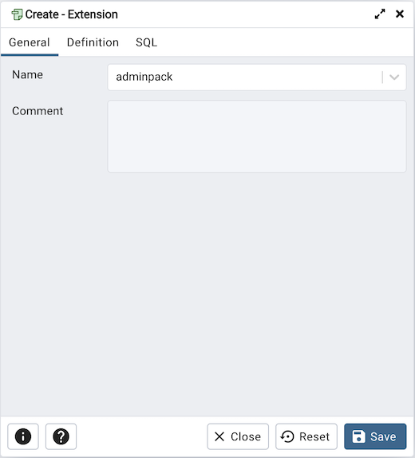
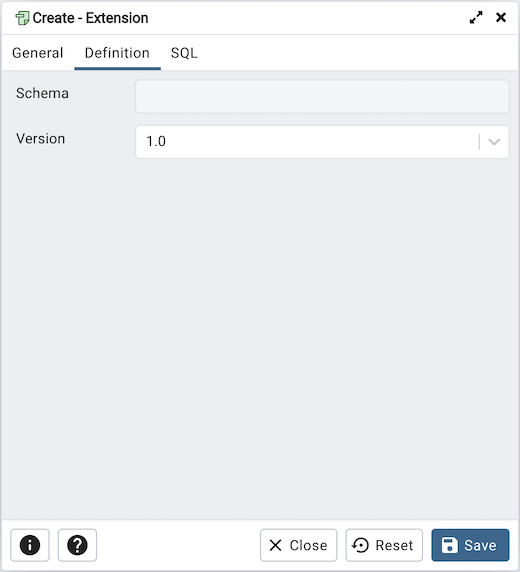
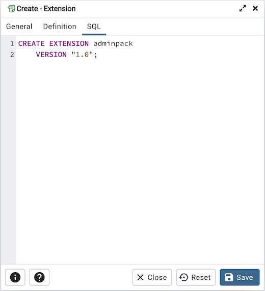

Extension Dialog¶
Use the Extension dialog to install a new extension into the current database. An extension is a collection of SQL objects that add targeted functionality to your Postgres installation. The Extension dialog adds the functionality of an extension to the current database only; you must register the extension in each database that use the extension. Before you load an extension into a database, you should confirm that any pre-requisite files are installed.
The Extension dialog allows you to implement options of the CREATE EXTENSION command through the following dialog tabs: General and Definition. The SQL tab displays the SQL code generated by dialog selections.
Use the fields in the General tab to identify an extension:
Use the drop-down listbox in the Name field to select the extension. Each extension must have a unique name.
Store notes about the extension in the Comment field.
Click the Definition tab to continue.
Use the Definition tab to select the Schema and Version:
Use the drop-down listbox next to Schema to select the name of the schema in which to install the extension’s objects.
Use the drop-down listbox next to Version to select the version of the extension to install.
Click the SQL tab to continue.
Your entries in the Extension dialog generate a SQL command (see an example below). Use the SQL tab for review; revisit or switch tabs to make any changes to the SQL command.
Example¶
The following is an example of the sql command generated by user selections in the Extension dialog:
The command creates the adminpack extension in the public schema. It is version 1.0 of adminpack.
Click the Info button (i) to access online help.
Click the Save button to save work.
Click the Close button to exit without saving work.
Click the Reset button to restore configuration parameters.